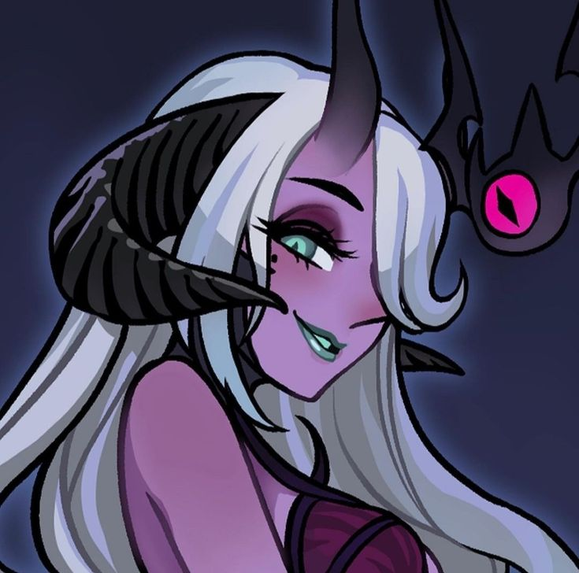

Saria
Summary:

If only Saria were as simple as lust. Of course that is the thing people think of when they speak of her. Succubi, seduction magic, trances and beauty - those are all things that Saria trades in. It's not wrong to say that she's the vizier of lust, it's just incomplete. Saria believes that lust is an extension of ownership, and a measure of one's control. She doesn't keep a harem because she enjoys their comfort or company. She keeps it for the same reason a king builds a statue of himself or a dragon hoards gold - and she will grow to any length to secure that status, be it by charm, trade, or violence.
The tragedy is that much of the world views her simplistically, and doesn't have the tools to fight her. Viewing her as a temptress ignores the true source of her power, and allows her to spread her abuses uncontested. Saria is at her most powerful when people see sex as a possession rather than an activity, and so long as she has power, her victims will live in fear of her mocking laughter and vicious whims. Still, though, there is hope - she has weakened over the course of history, as attitudes towards sex and sexuality become more casual. Those who study viziers hope she may die one day, with more of a whimper than a bang.
...god, that pun was awful.
Powers:
- Psychic magic, transformation, control
- Beauty, illusions
Weaknesses:
- Those with the courage to defy an abuser have rejected Saria's influence, and are generally immune to her magic.
- Saria doesn't have many direct fighting tools, and her followers tend to lose straight-up fights.
- Saria's perception of worth and value are warped - so analytical magics are often beyond her powers.
Followers:
- Kren'sa, also known as succubi and incubi, have pinkish skin, horns, and access to mild seduction magic.
- Saria has a wide variety of cults across the world, in positions of power both low and high.
Misconceptions:
- Castration, Asexuality, and other forms of libido denial do not work on seduction magic, even though everyone thinks they do. At a fundamental level, Saria's magic is more about the desires of the caster than the consent of its target.
- Abstinence does not counter her influence - mockery does. Saria loses power only when people think her "conquests" are meaningless.
- However, it is still possible to wield her magic without being abusive, controlling, or otherwise evil - Saria's influence is on a spectrum, and many are free of its more insidious aspects.